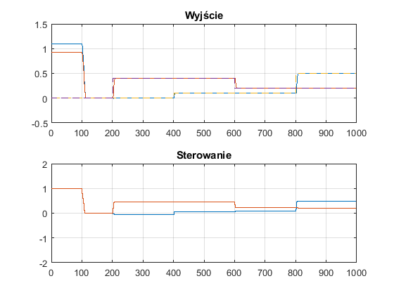

Contents
clearvars -except MPC_CROSSCOMPILER
warning off
if(~exist('MPC_CROSSCOMPILER','var'))
fprintf('MPC_CROSSCOMPILER NOT PRESENT\n');
NO_CROSSCOMPILER = 1;
addpath('..\\TestingFiles\\');
else
fprintf('MPC_CROSSCOMPILER EXISTS\n');
clearvars MPC_CROSSCOMPILER
NO_CROSSCOMPILER = 0;
end
alg = 'AutoMATiC_GPC_A';
MPC_CROSSCOMPILER NOT PRESENT
Przygotowanie danych
control_value = zeros(2,1);
INIT = 1;
kp = 100; kk = 1000;
nu = 2; ny = 2; nx = 2;
AD_Y = zeros(kk,ny);
AD_U = zeros(kk,nu);
AD_X = zeros(kk,nx);
AD_DU = zeros(kk,nu);
AD_Z = zeros(1,2);
Obiekt regulacji i jego modele
KS = [1,.1;.02,.9];
Gs = [...
tf(KS(1,1),[1,1]), tf(KS(1,2),[1,1]);...
tf(KS(2,1),[1,1]), tf(KS(2,2),[1,1]);...
];
SSs = ss([-1,0;0,-1],KS,[1,0;0,1],[0,0;0,0]);
Gz = c2d(Gs,1);
SSz = c2d(SSs,1);
Stmp = step(Gz);
S = shiftdim(Stmp,1);
DMC_S=S(:,:,2:end);
for m=1:ny
tmpa = conv(Gz.Denominator{m,1},Gz.Denominator{m,2});
GPC_a(m,:) = tmpa(2:end);
tmpb = conv(Gz.Numerator{m,1},Gz.Denominator{m,2});
GPC_b(m,1,:) = tmpb(1:end);
tmpb = conv(Gz.Numerator{m,2},Gz.Denominator{m,1});
GPC_b(m,2,:) = tmpb(1:end);
end
Parametry algorytmu regulacji
N = 10;
Nu = 10;
lambda = 1.0;
psi = 1.0;
dumin = -0.10;
dumax = 0.10;
umin = -4.00;
umax = 4.00;
run(alg);
Inicjalizacja procesu regulacji
Zpp = [0;0];
Xpp = [0;0];
Upp = [1;1];
for AD_K = 1:kk
Xpp = SSz.A*Xpp+SSz.B*Upp;
end
Ypp = SSz.C*Xpp;
simT = (1:kk)';
simU = ones(kk,1)*Upp';
simY = ones(kk,1)*Ypp';
simZ = ones(kk,1)*Zpp';
for AD_K = 1:(kp-1)
AD_Y(AD_K,:) = Ypp;
AD_U(AD_K,:) = Upp;
AD_X(AD_K,:) = Xpp;
end
Symulacja
if(NO_CROSSCOMPILER)
for AD_K = kp:kk
AD_X(AD_K,:) = (SSz.A*AD_X(AD_K-1,:)'+SSz.B*AD_U(AD_K-1,:)')';
AD_Y(AD_K,:) = (SSz.C*AD_X(AD_K-1,:)'+SSz.D*AD_U(AD_K-1,:)')';
if (AD_K<= 200); AD_Z = [0.0, 0.0];
elseif(AD_K<= 400); AD_Z = [0.0, 0.4];
elseif(AD_K<= 600); AD_Z = [0.1, 0.4];
elseif(AD_K<= 800); AD_Z = [0.1, 0.2];
elseif(AD_K<=1000); AD_Z = [0.5, 0.2];
end
run(alg);
AD_DU(AD_K,:) = control_value';
AD_U (AD_K,:) = AD_U(AD_K-1,:)+AD_DU(AD_K,:);
simT(AD_K) = AD_K;
simU(AD_K,:) = AD_U(AD_K,:);
simY(AD_K,:) = AD_Y(AD_K,:);
simZ(AD_K,:) = AD_Z(:);
end
end
if(NO_CROSSCOMPILER)
plot_result(simT,simY,simZ,simU)
end
code = generate(alg,'controller');
if(NO_CROSSCOMPILER)
end
if(NO_CROSSCOMPILER)
end
if(NO_CROSSCOMPILER)
data = csvread('data.csv',1);
simT = data(:,1);
simZ = data(:,2:3);
simY = data(:,4:5);
simU = data(:,6:7);
Empty = data(:,8);
plot_result(simT,simY,simZ,simU);
end
function plot_result(simT,simY,simZ,simU)
Funkcja wyświetlająca przebieg regulacji na jednej figurze podzielonej
w poziomie na górny wykres (wyjście Y i wartość zadana Z w czasie T),
oraz na dolny wykres (wartość sterowania U w czasie T)
figure;
subplot(2,1,1);
plot(simT,simY);
hold on;
stairs(simT,simZ,'--');
grid;
title('Wyjście');
subplot(2,1,2);
stairs(simT,simU);
grid;
ylim([-2 2]);
title('Sterowanie');


end
ALG: AutoMATiC_GPC_A -> NAME: controller
--- LEXER ----
--- PARSER ----
--- GENERATOR ----